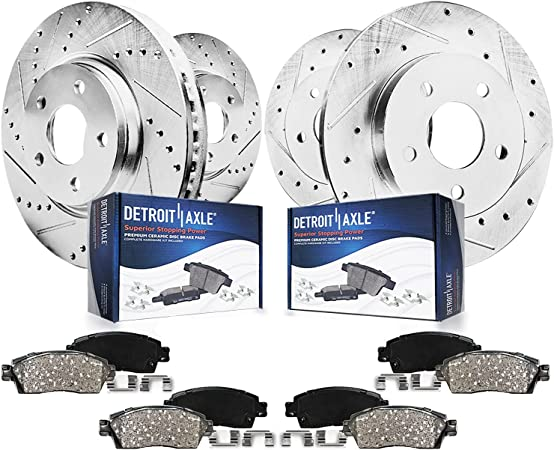
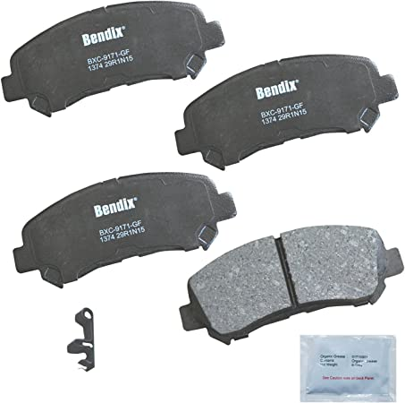
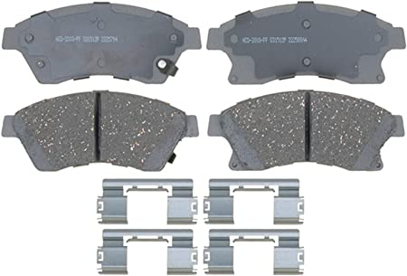

Surtek 107219 Separador de Balatas para el Freno de Disco
$138.04
Para la mayoría de los autos y camionetas pequeños. Comprime el pistón del freno de disco para una fácil instalación de la pastilla. Marca surtek.

Detroit Axle – completo delantero y trasero de 262 mm y rotores de freno y pastillas de freno de cerámica con hardware para Chrysler 200 de 11 – 14 – [08-10 Avenger Sebring 2,4/2,7 L] Jeep Compass Patriot
$6,854.49
Marca: DETROIT AXLE

Bendix Premium Copper Free CFC1374 Pastilla de freno de cerámica (delantera)
$655.49
Marca: Bendix Premium Copper Free Material: Cerámica Position: Parte delantera

ACDelco Silver 14D1522CHF1 Juego de pastillas de freno de disco delantero de cerámica
$399.00
Marca: ACDelco Material: Cerámica Position: Parte delantera